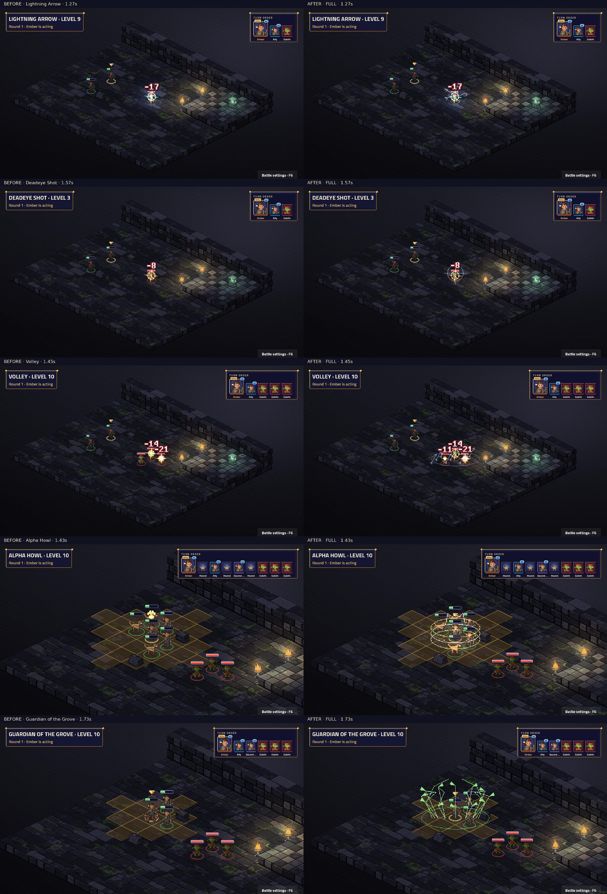

Attack · Level 1
Weapon attack, weapon range: weapon damage
Arrows and barrages · Three subclasses · Real hound turns · Marks and growth
Native TV capture: before on the left, after on the right. Fixed map and seed; real engine events and BeatPlayer. Level labels are the character’s unlock level. Videos preserve the complete cast, impact, effect tails and camera settle. Posters align the impact for comparison.
Frozen before: e89d584caa84918e2de93684d298cc4a072da04a. Review notes and limitations · Frame measurements · Actual beat timings
Complete 29-sample contact sheet · Native cast close-up

Static modifiers have no standalone proc. Every ability and visible proc must have a real fixture for this capture to succeed.
| Name | Subclass | Level | Kind | Cut-in | Before keys | After keys |
|---|---|---|---|---|---|---|
| Ensnaring Thorns · turn-start | Base class | 1 | proc | none | No art key | fx.ranger_ensnared_thorns.root |
| Cure Wounds | Base class | 1 | ability | short | characters.pray · fx.heal.nature | characters.ranger_ward · fx.ranger_cure_wounds.healing |
| Ensnaring Strike | Base class | 1 | ability | full | characters.shoot · signature.warden_vine_snare.root · projectiles.arrow | characters.ranger_draw · fx.ranger_ensnaring_strike.root · fx.ranger_ensnaring_strike_shot.root |
| Entangle | Base class | 1 | ability | full | characters.channel · signature.warden_vine_snare.root | characters.ranger_ward · fx.ranger_entangle.root |
| Hail of Thorns | Base class | 1 | ability | short | characters.shoot · fx.circle.nature · projectiles.arrow | characters.ranger_draw · fx.ranger_hail_of_thorns.wood · fx.ranger_hail_of_thorns_shot.wood |
| Hunter's Mark | Base class | 1 | ability | short | characters.point · fx.circle.nature | characters.ranger_command · fx.ranger_hunters_mark.force |
| Hunters Mark Bonus | Base class | 1 | proc | none | No art key | fx.ranger_hunters_mark_bonus.force |
| Archery | Base class | 2 | static | none | No art key | No art key |
| Barkskin | Base class | 5 | ability | short | characters.buff · fx.ward.nature | characters.ranger_ward · fx.ranger_barkskin.wood |
| Lesser Restoration | Base class | 5 | ability | short | characters.pray · fx.restore.nature | characters.ranger_ward · fx.ranger_lesser_restoration.healing |
| Spike Growth | Base class | 5 | ability | short | characters.summon · fx.circle.nature | characters.ranger_ward · fx.ranger_spike_growth.root |
| Spike Growth · OnEnterTile | Base class | 5 | proc | none | No art key | fx.ranger_spike_growth_step.root |
| Roving | Base class | 6 | static | none | No art key | No art key |
| Conjure Barrage | Base class | 9 | ability | short | characters.shoot · fx.arrow.oak | characters.ranger_volley · fx.ranger_conjure_barrage.force |
| Lightning Arrow | Base class | 9 | ability | short | characters.shoot · fx.shock.storm · projectiles.arrow | characters.ranger_draw · fx.ranger_lightning_arrow.storm · fx.ranger_lightning_arrow_shot.storm |
| Vanish | Base class | 10 | ability | short | characters.dodge · fx.misty.shadow | characters.ranger_vanish · fx.ranger_vanish.mist |
| Companion | ranger.beastmaster | 3 | proc | none | No art key | fx.ranger_companion.gold |
| Sic 'Em | ranger.beastmaster | 3 | ability | full | characters.point · signature.beastmaster_hunt_mark.amber | characters.ranger_command · fx.ranger_sic.gold |
| Pack Bond | ranger.beastmaster | 6 | ability | full | characters.cast · signature.beastmaster_hunt_mark.amber | characters.ranger_command · fx.ranger_pack_bond.gold |
| Alpha Howl | ranger.beastmaster | 10 | ability | full | characters.summon · signature.beastmaster_hunt_mark.amber | characters.ranger_command · fx.ranger_alpha_howl.gold |
| Ferocious Bond | ranger.beastmaster | 10 | proc | none | No art key | fx.ranger_ferocious_bond.steel |
| Deadeye Shot | ranger.sharpshooter | 3 | ability | full | characters.shoot · signature.sharpshooter_deadeye.scope · projectiles.arrow | characters.ranger_draw · fx.ranger_deadeye.steel · fx.ranger_deadeye_shot.steel |
| High Ground Mastery | ranger.sharpshooter | 3 | proc | none | No art key | fx.ranger_high_ground_mastery.steel |
| Piercing Shot | ranger.sharpshooter | 6 | ability | full | characters.shoot · signature.sharpshooter_deadeye.scope · projectiles.arrow | characters.ranger_volley · fx.ranger_piercing_shot.steel · projectiles.arrow |
| Volley | ranger.sharpshooter | 10 | ability | short | characters.shoot · fx.arrow.oak · projectiles.arrow | characters.ranger_volley · fx.ranger_volley.steel · fx.ranger_volley_shot.steel |
| Tough Bark | ranger.warden | 3 | static | none | No art key | No art key |
| Vine Snare | ranger.warden | 3 | ability | full | characters.point · signature.warden_vine_snare.root | characters.ranger_ward · fx.ranger_vine_snare.root |
| Nature's Veil | ranger.warden | 6 | ability | full | characters.buff · signature.warden_vine_snare.root | characters.ranger_ward · fx.ranger_natures_veil.root |
| Guardian of the Grove | ranger.warden | 10 | ability | full | characters.summon · signature.warden_vine_snare.root | characters.ranger_ward · fx.ranger_guardian_tree.root |
Weapon attack, weapon range: weapon damage
Actual Ensnaring Strike, failed save and thorn damage on the victim's real turn. Fixture seed 7.
1 tile: heals 2d8 + casting modifier
Weapon attack, 8 tiles: weapon damage; Str save (target is Ensnared until saved) — On a hit, thorny vines bind the target: a STR save or restrained, taking 1d6 piercing each turn until it breaks free.
6 tiles, burst 1: creates a entangle zone (burst 1) for 10 rounds, difficult terrain, ends if you lose concentration; Str save (target is Restrained until saved)
Weapon attack, 8 tiles: weapon damage; Dex save (1d4 piercing; half damage on a save); chains to up to 2 more targets within 1 tile — On a hit, your arrow bursts into thorns: up to two foes make a DEX save against thorns: 1d4 piercing, 1d6 from level 3.
6 tiles: target is Hunted — Hits on a Hunted target deal an extra 1d4 force at levels 1 and 2, then 1d6 from level 3: a game balance progression.
Visible passive triggered during Attack; fixture seed 7. Weapon attack, weapon range: weapon damage
1 tile: target is Barkskinned
1 tile: ends poison conditions on target; ends Blinded on target; ends Paralysed on target
6 tiles, burst 2: creates a spikes zone (burst 2) for 10 rounds, difficult terrain, ends if you lose concentration; units inside: When you enter a tile, on yourself: 2d4 piercing — The ground sprouts hard spikes: difficult terrain, and 2d4 piercing for every tile walked into it.
Real engine zone entry hook.
Dex save, self, cone 7: 4d8 force; half damage on a save — Game balance: conjured missiles sweep the cone for 4d8 force per creature; a Dexterity save halves the damage.
Weapon attack, 8 tiles: 4d8 lightning; on a miss, 2d8 lightning — Your arrow becomes a bolt of lightning: 4d8 lightning on a hit, half as much on a miss.
Self: you are Hidden for 1 round
Beastmaster: Real OnBattleStart hook; fixture seed 7.
Beastmaster: 6 tiles: marks target for 2 rounds (your attacks on it have advantage); target is Lit for 1 round
Beastmaster: 6 tiles: heals 1d8 + casting modifier; target gets +2 to attack rolls and +2 weapon damage for 1 round
Beastmaster: 0 tiles, burst 3: target gains 2d8 + level temporary HP; target gets +1 Move and has advantage on its attack rolls for 2 rounds
Beastmaster: Visible passive triggered during Attack; fixture seed 7. Weapon attack, weapon range: weapon damage
Sharpshooter: Weapon attack, weapon range: weapon damage + 1d8. With more than one attack, these bonuses and riders apply until the first hit; the rest are plain hits
Sharpshooter: Visible passive triggered during Attack; fixture seed 7. Weapon attack, weapon range: weapon damage
Sharpshooter: Dex save, self, line 6: 3d8 piercing; half damage on a save
Sharpshooter: Weapon attack, 8 tiles, burst 2: weapon damage + 2d8
Warden: Str save, 4 tiles: pulls target up to 2 tiles toward you; target is Restrained for 1 round; 2d6 bludgeoning
Warden: Self: you gain 1d10 + level temporary HP; you get +2 AC for 1 round
Warden: 0 tiles, burst 2: creates a entangle zone (burst 2) for 3 rounds, difficult terrain; target gains 3d8 + level temporary HP; target gets +2 AC for 2 rounds
Actual summoned hound's own turn and move; fixture seed 7.
Actual summoned hound's own turn and attack; fixture seed 7.